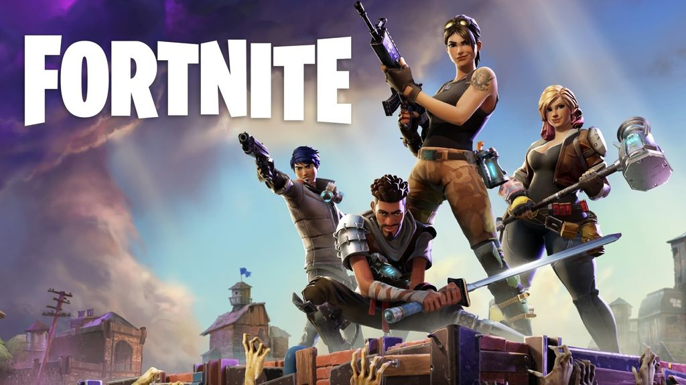
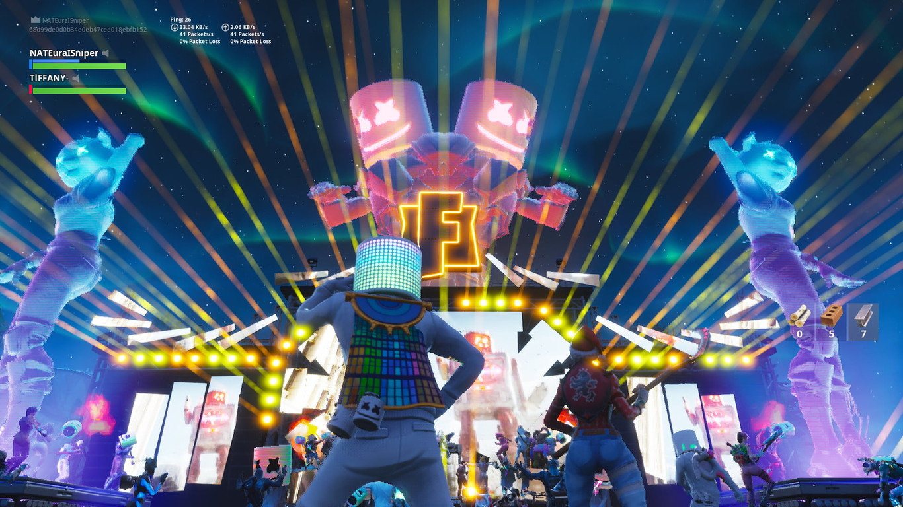
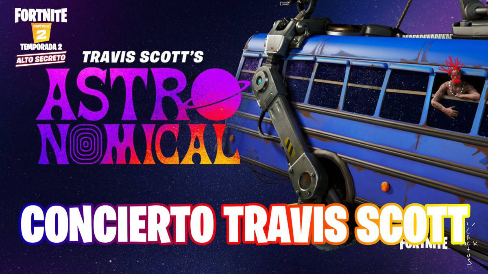
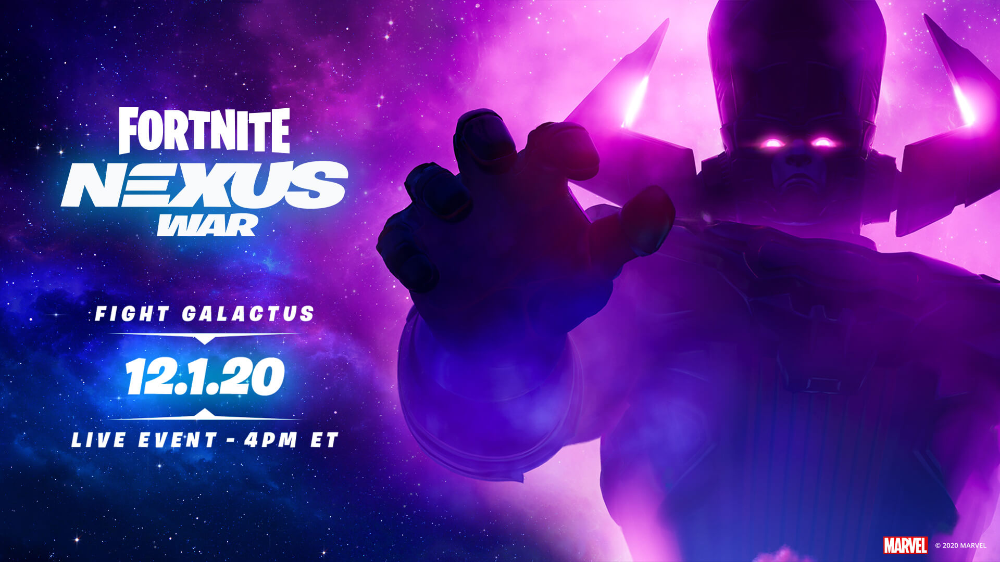

LEFT 4 DEAD 1-2

LEFT 4 DEAD 1-2 |
|
|---|---|
| |
| Left 4 Dead es un videojuego de disparos en primera persona, cooperativo y asimétrico del género «survival horror», desarrollado por Turtle Rock Studios y publicado por Valve Corporation. El juego utiliza el motor gráfico de Valve, Source, y está disponible para Microsoft Windows, Xbox 360 y macOS. El desarrollo del juego se completó el 13 de noviembre de 2008, y dos versiones fueron lanzadas digitalmente: una versión digital descargable, lanzada el 17 de noviembre de 2008, y una versión digital en discos, con una fecha de lanzamiento determinada por región. | |
| Left 4 Dead 2 es un videojuego de disparos en primera persona cooperativo de tipo Horror de supervivencia creado por la compañía Valve. Es la secuela de Left 4 Dead y se lanzó al mercado el 17 de noviembre de 2009 en Estados Unidos y las Americas. En Europa llegó tres días después, el 20 de noviembre. Esta secuela está disponible para PC y para la consola Xbox 360. | |
| El juego cuenta con los cuatro modos de partida: el Un jugador (en el que se juega un solo jugador), el Campaña (en el que se juega en línea con otros jugadores), el Enfrentamiento (podemos jugar como infectados) y el Supervivencia (en el que hay que sobrevivir el mayor tiempo posible).También se han creado dos nuevos modos de juego: el primero llamado Búsqueda, en el cual los supervivientes deben encontrar latas de gasolina para hacer funcionar un generador, mientras que los infectados tienen que evitar a toda costa que los supervivientes logren su cometido (todo esto con el tiempo en contra). El segundo es el modo Realista, en el que hay que jugar las mismas campañas, pero con la diferencia de que los supervivientes no brillan si se encuentran muy lejos, ni tampoco se avisa al equipo quién está siendo atacado por un infectado especial. |  | |
|---|---|---|
BRAWL STARS |
|
|---|---|
 | |
INICIOS DE BRAWL STARS | Antes de su lanzamiento global |
MODO DE JUGAR | Tienes que mover a tu brawler con el Joystick alrededor del mapa, mderrotando a tus enemigos con tus ataques básicos y con tu Súper habilidad especial del brawler, tienes que mejorar a tus brawlers al nivel al máximo para conseguir vuestras "Habilidades Estelar y Gadgets" los Gadgets se desbloquean al nivel 7 y la Habilidad Estelar al 9. |
COLABORACIONES | Actualmente tiene colaboraciones con Paris Saint-Germain "PSG" y LINE FRIENDS,la comunidad espera que haya mas colaboraciones algo que si habrá de acá e un futuro. |
Cinematica | |
DOTA "EL BOOM DEL MOBA" |
|
|---|---|
 | |
Historia y desarrollo | Warcraft III es la secuela de Warcraft II, desarrollada por Blizzard Entertainment. Al igual que su antecesor, Warcraft III incluye un editor de mapas gratuito, que permite a los jugadores crear y modificar escenarios personalizados que pueden ser utilizados en modos de un jugador y multijugador. Los mapas resultantes deben cargarse desde el juego, y pueden consistir en sencillos escenarios de batalla para jugarse en una partida normal de Warcraft, o juegos alternativos totalmente nuevos, con nuevos objetivos, unidades, objetos y eventos; Defense of the Ancients es de este último tipo. El mapa original de DotA fue creado por un jugador y creador de mapas conocido como «Eul» mediante el editor de mapas de Warcraft III: Reign of Chaos. Luego del lanzamiento de la expansión The Frozen Throne, que añadió nuevas características al editor de mapas, Eul no actualizó el escenario, por lo que fueron otros autores quienes se encargaron de realizar dicha actualización, y actualizar posteriormente el juego. |
Jugabilidad | En una partida de Defense of the Ancients siempre hay dos equipos de jugadores: los Centinelas (The Sentinel) y el Azote (The Scourge). El equipo de los Centinelas tiene su punto de inicio en la esquina inferior izquierda del mapa, mientras que el Azote tiene el suyo en la esquina superior derecha. Cada base es defendida por estructuras llamadas "torres", y por oleadas de unidades que recorren tres caminos que unen las dos bases: una central, y dos laterales. En el fondo de cada base se encuentra el «Ancient» de cada equipo, un edificio que debe ser destruido para ganar la partida. |
Recepción | En junio de 2008, Michael Walbridge, escribiendo para Gamasutra, afirmó que DotA es la modificación gratuita y no soportada más popular y discutida del mundo. Haciendo referencia a la gran comunidad formada alrededor del juego, Walbridge señaló que es mucho más fácil para un juego comunitario el que sea mantenido por su comunidad, y esta es una de las grandes fortalezas del juego. Según Dotarank.com, que lleva estadísticas de partidas y ladder de Defense of the Ancients, en los servidores oficiales de Blizzard de Battle.net se han jugado más de 500.000 partidas de DotA, por aproximadamente un millón de jugadores. Blizzard apuntó que DotA es un ejemplo de lo que se puede llegar a desarrollar utilizando las herramientas de creación que se incluyen con los juegos. |
| Cinematica | |
Seccion de noticia Fortnite |
|
|---|---|
 | |
|  | Fortnite es un juego online de disparos (lo que se conoce como un shooter) en tercera persona (es decir; que ves a tu personaje según se mueve). Tiene dos modos de juego: Salvar al mundo y Battle Royale. Salvar al mundo es un mundo abierto que puede jugarse solo o online con amigos y es cooperativo. El juego consiste en pelear contra olas de enemigos, controlados por una inteligencia artificial, llamados Husks. El jugador puede estar en un equipo con otros tres jugadores, solo con un equipo de bots o puede incluso desactivar los bots para tener una experiencia completamente en solitario. Battle Royale es el modo que está causando furor entre los adolescentes. Se trata de un modo competitivo donde el jugador es parte de un equipo de cuatro personas (conocidas o desconocidas), que debe tratar de sobrevivir. Los jugadores son liberados en paracaídas sobre una isla donde hay otros 96 jugadores de distintos niveles y deben completar misiones y eliminar enemigos con el objetivo de ser el último superviviente. Además, deben evitar tormentas que reducen el espacio de juego y les perjudican. Para ello y para defenderse, pueden construir estructuras de distintos materiales. |
EVENTOS | |
|  | Imposible que nadie que esté familiarizado con el juego en línea Fortnite no supiera que el sábado pasado iba a pasar algo grande. La cita estaba apuntada en rojo en las agendas de los 200 millones de fans del shooter multijugador que Epic Games lanzó en el 2017, y eso que la información fue apareciendo a cuentagotas desde principios de semana, hasta que más tarde, el propio DJ Marshmello incluyó el concierto en vivo dentro del vídeojuego en la agenda de su web oficial. El recinto iba a ser Pleasant Park, una de las plazas más grandes del famoso juego online. Según el fundador de Game Awards, Geoff Keighley, más de 10 millones de usuarios con ganas de fiesta desactivaron sus armas y se fueron a bailar con el DJ estadounidense. La cita de Fortnite triplicó lo que el Guinness considera el mayor concierto r-e-a-l hasta la fecha: el que ofreció el cantante británico Rod Stewart el Fin de Año de 1994 en la playa de Copacabana de Río de Janeiro. |
|  | Cuando Epic Games anunció una serie de conciertos de Travis Scott en Fortnite, la expectación de su comunidad creció como la espuma. ¿El motivo? Millones de jugadores se encuentran confinadas en su casa debido a la pandemia de coronavirus, por lo que mayoría disponía del tiempo suficiente para disfrutar el evento de principio a fin. Además, la compañía estableció horarios por región, lo cual permitió que más personas se sumaran a su propuesta. Para fortuna de Epic Games, la aparición del rapero estadounidense fue un éxito absoluto. Apenas en el primer concierto, Travis Scott reunió a 12,3 millones de jugadores de manera concurrente, una cifra brutal. De hecho, sería complicado encontrar otro videojuego que haya conseguido tal hazaña. El propio Fortnite acumuló 10,7 millones de espectadores en el concierto de Marshmello celebrado en febrero de 2019, pero su récord quedó sepultado este fin semana. Según los datos compartidos por la compañía, participaron 27,7 millones de jugadores únicos a lo largo de los cinco conciertos de Travis Scott. El evento se disfrutó un total de 45,8 millones de veces. Pese a que otros battle royale como Call of Duty: Warzone siguen creciendo a un ritmo impresionante, todavía están lejos de ofrecer eventos especiales al nivel de Fornite. Tanto el juego como el rapero fueron tendencia en Twitter en diferentes países del mundo, incluyendo España y México. |
|  | Epic Games lo ha vuelto a hacer. Con motivo del final de la Temporada 4 de Fortnite, la compañía norteamericana ha preparado un espectacular evento de despedida que ha conseguido reunir a 15,3 millones de jugadores de forma simultánea. A las 22:00 horas (horario peninsular español) de este martes, los jugadores del popular videojuego han podido asistir y participar en una secuencia interactiva protagonizada por Galactus, uno de los villanos más emblemáticos de Marvel. Durante este evento celebrado dentro de Fortnite, el llamado “devorador de mundos” ha intentado hacerse con el poder del Punto Cero, pero los usuarios del videojuego lo han impedido. La secuencia ha comenzado con el gigantesco Galactus expulsando a los jugadores de la isla con un golpe violento. Poco después, Iron-Man ha aparecido con un plan, usar la energía conjunta de cada uno de los bus de batalla para acabar con este ser todopoderoso. Para conseguirlo los jugadores han tenido que participar en una sorprendente escena interactiva en la que han conducido este vehículo por el espacio. |
¿QUE ES FORTNITE? | |
MINECRAFT | |
|---|---|
| HISTORIA BREVE | |
 | Minecraft
fue desarrollado en el año 2009 por el sueco Markus Persson, mejor conocido en la comunidad como Notch. Algo interesante es que Notch comenzó
a programar a la corta edad de 7 años con una computadora Commodore 128. Gracias a su pasión y talento Notch creó su primer videojuego a la
edad de 8 años.
Cuando tenía 25 comenzó a trabajar para la empresa King, sí, la misma empresa del famoso juego candy crush. Después de 5 años y ya algo cansado de trabajar en las ideas de otros Notch deja la empresa para así enfocarse en sus propios proyectos. Es en esta época donde le surge la idea de crear un videojuego tipo sandbox, en donde los jugadores pudieran crear lo que su imaginación les permitiera. Para la época en la que Minecraft comenzó a desarrollarse la idea de juego con gráficos simples, donde, literalmente podíamos ver los pixeles estirados, sonaba a algo descabellado, más aún cuando las grandes empresas se centraban cada vez más en crear juegos con gráficos mucho más realistas. Notch sabía que los gráficos no definen el juego así que decidió ir contra la corriente y centrarse en la jugabilidad. En palabras de Notch: "Me di cuenta de que un juego simple y dinámico tenía un gran potencial para convertirse en un gran juego, y sigo viniendo con cosas que quería cambiar y cosas que quería añadir". Minecraft fue desarrollado utilizando Java, este fue quizás otro de los puntos claves para que el juego fuera todo un éxito y fue lanzado al público en general el 17 de Mayo del 2009. Lo interesante aquí es que en su lanzamiento el juego ni siquiera estaba completo. Tras el rotundo éxito del juego en 2014 Microsoft compra la empresa mojang, y con ello por supuesto Mincraft, por la módica cantidad de 2,500 millones de dólares. Para esas fechas Notch ya siendo multimillonario se despide del proyecto, ya no siendo parte de la toma de decisiones del proyecto. |
¡LO NUEVO EN MINECRAFT! | |
| MINECRAFT 1.17 CAVES & CLIFFS | |
 | Todavía no hay una fecha exacta para la llegada de la versión definitiva MINECRAFT 1.17, pero aún tendremos que esperar unos meses, pues ya en aquel evento se nos dijo en la MINECRAFT LIVE que su llegada estaba prevista para el verano de este 2021. Si la Verción 1.16 trajo finalmente la esperada actualización del NETHER, con Minecraft 1.17 lo que se reinventa por completo la CUEVAS en MINECRAFT que dificulta todavía más encontrar diamantes, pero que como recompensa nos ofrece nuevas y fascinantes localizaciones, enemigos como el Warden, que supondrán un enorme desafío, y criaturas como el ajolote, que se convertirá en un muy valioso compañero de batallas, o el glowing squid, que dará luz a tu búsqueda. Con la snapshot de la 1.17 (21w13a): Ya podemos ver una generación mucho más avanzada, unas cuevas todavía más extensas y visualmente mucho más ricas, y según afirma Mojang, ahora también se generan con más frecuencia. He probado en varios mapas aleatorios, a picar hacia abajo en el punto inicial, y en cuatro de cinco he encontrado rápidamente una cueva enorme. Como puedes ver en la imagen que abre esta noticia, ahora el aspecto de las cuevas ha mejorado mucho, gracias a un uso más inteligente de los materiales. Además, las columnas que las recorren de techo a suelo aportan un punto de perspectiva que nos ayuda a percibir mejor su tamaño, y el modo en el que roca y pizarra profunda rocosa se van combinando en las capas cercanas a la cero (recuerda que en Minecraft 1.17 la base se encuentra en la coordenada Y -64) les da un aspecto mucho más natural. Y si estás dispuesto a escalar a las más altas montañas, podrás disfrutar de la compañía (o de los empujones, que los dan) de las cabras de Minecraft. Lo unico nuevo que hay en la ACTUALIZACIÓN de las MONTAÑAS son bloques como, nieve en polvo, hielo, minerales, arboles, aún no esta acabado lo de las MONTAÑAS por eso mismo no hay fecha exacta de la salida de la 1.17 de MINECRAFT |
 |
|